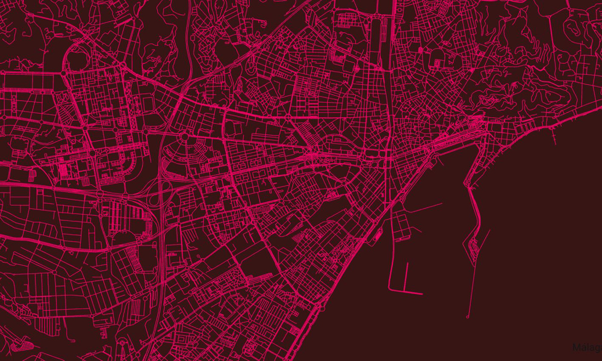

Constanza Torrilla
Técnica en Sistemas de Información Geográfica
¡Hola! Puedo ayudarte a gestionar, analizar y visualizar datos espaciales para apoyar diversos proyectos e iniciativas vinculadas a la información geoespacial.Me especializo en IDE y la aplicación de tecnologías geoespaciales para resolver problemas en diversos campos. Mi pasión por la cartografía digital y la ciencia geoespacial me ha llevado a profundizar en el diseño, desarrollo e implementación de soluciones SIG y en la creación de Infraestructuras de Datos Espaciales (IDE) que facilitan la toma de decisiones y la gestión eficiente de recursos geográficos. Con un enfoque meticuloso y orientado a resultados, estoy comprometida en utilizar mis habilidades técnicas y mi creatividad para abordar desafíos complejos y contribuir al avance y desarrollo de la tecnología geoespacial.
Proyectos en los que participé
Territorios en Acción
Relevamiento cartográfico e interacción con organizaciones sociales. Construcción de base de datos + Web Mapping. Fortalecimiento de las redes de organizaciones sociales frente a la pandemia en el conurbano bonaerense.
Visitar páginaMapas del Encuentro
Relevamiento cartográfico e histórico del Municipio construcción de plancheta catastral.Corredores seguros para vecinos construcción de informes, relevamiento fotográfico y análisis espacial, redibujado de planchetas catastrales. Entrevistas. Construcción de reflexiones y textos académicos.
Visitar páginaCapacitadora SIG para organización TECHO
Formación en sistemas de información geográficos a equipo candidato a ingreso al área de integración socioterritorial del Municipio de Moreno. #Qgis #GoogleEarthEngine #OpenSource Elaboración de proyecto final con mapeocoletivo.
Visitar páginaAnalisis Espacial
Capacidad de análisis espacial de datos utilizando software de mapeo. Experiencia en el tratamiento de datos estadísticos. Edición y validación cartográfica Mapas temáticos Modelado de flujos de análisis espacial Incorporación de la tercera dimensión (análisis 3D)
¿cuánto tarda y qué valor tiene mi proyecto?
Bases de datos, servidores y APIs
Gestion capas de datos poniendo en marcha Sistemas Bases de Datos diseñados para sacar el máximo rendimiento a los recursos con componente espacial. Creación o conversión de bases de datos geográficas. Puesta en marcha en servidores de datos. Creación de servidores de mapas basados en estándares OGC. Diseño de API Rest geográficos.
¿cuánto tarda y qué valor tiene mi proyecto?
Captura de datos
Tecnología para dotar de componente espacial a los datos (geolocalización, geocodificación…) Somos igualmente especialistas en procesos geográficos extracción, transformación y carga. Podemos ofrecer trabajos de levantamiento topográficos, actualización de cartografía digital o gestión catastral. Geolocalización y geocodificación. Gestión de topología (redes). ETL espacial. Actualizaciones cartográficas.
¿cuánto tarda y qué valor tiene mi proyecto?
Capacitaciones SIG
Aprende paso a paso. Actualiza tus conocimientos en SIG y medio ambiente con formación teórico-práctica adaptada a tu perfil. Elaborada por técnicos profesionales para que te conviertas en un especialista en tu sector.
grupales e individuales

Consultoría y Desarrollo en Sistemas de Información Geográfica
Te ofrecemos nuestros servicios de consultoría y desarrollo GIS tanto a empresas privadas y particulares como a la Administración Pública a escala nacional e internacional.